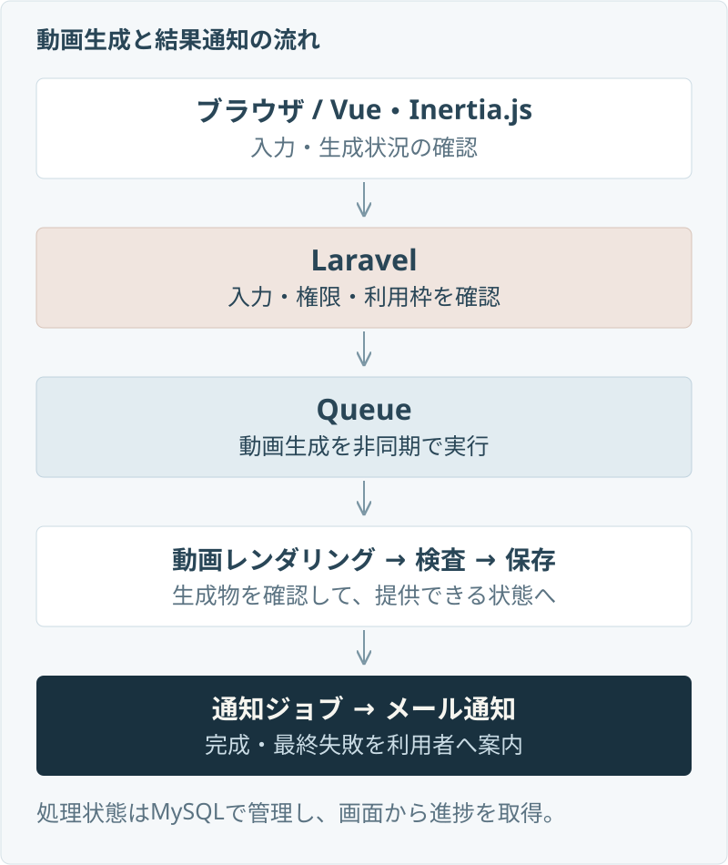

重複操作と再試行
生成ジョブの識別、重複実行の抑制、DBのトランザクションと行ロックを組み合わせ、連続タップや再試行で利用枠を余分に消費しないように扱います。
01 / PRODUCT
作成画面だけでなく、会員登録、メール確認、動画利用枠、生成状況、完成・失敗時の通知を一つの流れとして扱います。
02 / ARCHITECTURE
動画レンダリングを通常の画面リクエスト内で待たせず、Laravel Queueで処理します。入力と権限を確認し、生成物の検査・保存を終えてから、利用者に結果を案内します。

03 / ENGINEERING DECISIONS
生成処理には連続操作、再試行、途中失敗、期限切れなどが起こり得ます。利用者に見える結果と、内部で完了した処理を分けて考えました。
生成ジョブの識別、重複実行の抑制、DBのトランザクションと行ロックを組み合わせ、連続タップや再試行で利用枠を余分に消費しないように扱います。
レンダリングの成功だけで完成扱いにせず、必要なファイルを検査・保存します。途中で失敗した場合は状態更新と後片付けを行います。
セッション、署名付きURL、期限付きトークンで表示条件を確認。別セッション、期限切れ、公開取り下げ後の参照を制御します。
生成ジョブとは別に通知ジョブを設け、完成時と最終失敗時にメールで案内。送信状態と期限を管理して結果確認へつなげます。
04 / QUALITY
正常に作れることに加え、権限、保存、再試行、期限切れを確認するテストを用意しています。
NEXT CASE
漫画編集、音楽再生、ゲーム。それぞれの画面・保存・通信と、iOS・Androidでの公開まで紹介します。